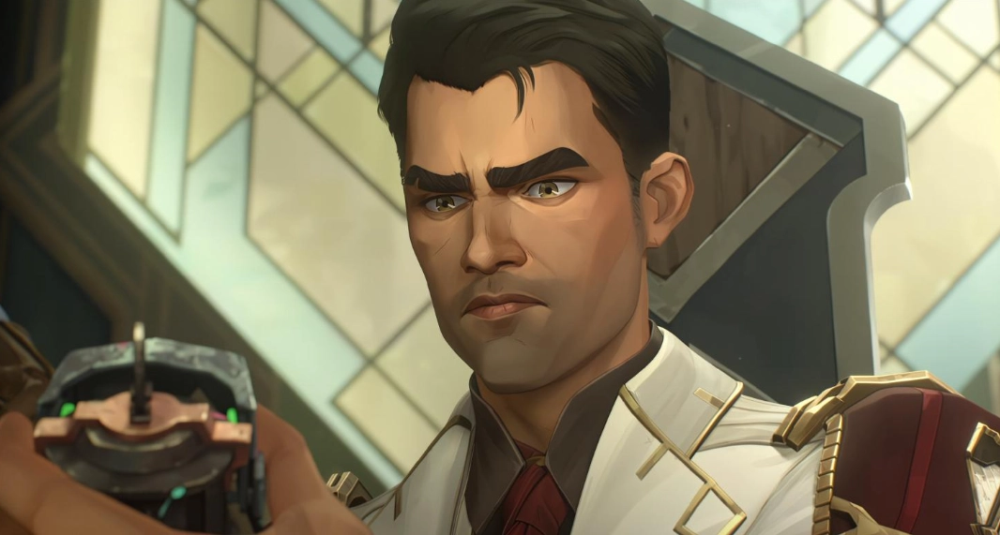

Jayce es un muchacho brillante obsesionado con la magia desde pequeño al ser salvados el y su madre de una tormenta de nieve por un mago arcano. Desde ese día intenta controlar la magia mediante la ciencia y la tecnología, algo que no es bien recibido en la Academia, especialmente por el Profesor Heimerdinger que pudo presenciar como el mal uso de la misma puede traer grandes desgracias. Sus investigaciones estaban financiadas por la casa Kiramann cuya heredera se trata de Caitlyn (su mejor amiga), pero un accidente pone en peligro su investigación y su carrera. Jayce encuentra un aliado y socio en Viktor, juntos logran crear la tecnología Hex, con la cual logran impresionantes avances no solo en la tecnología sino también en la economía de Piltover. Su éxito lo lleva a la política y a integrar el Ethos, poniendo todo el peso de las decisiones que conciernen a Piltover y la aun no independizada Zaun en sus hombros.